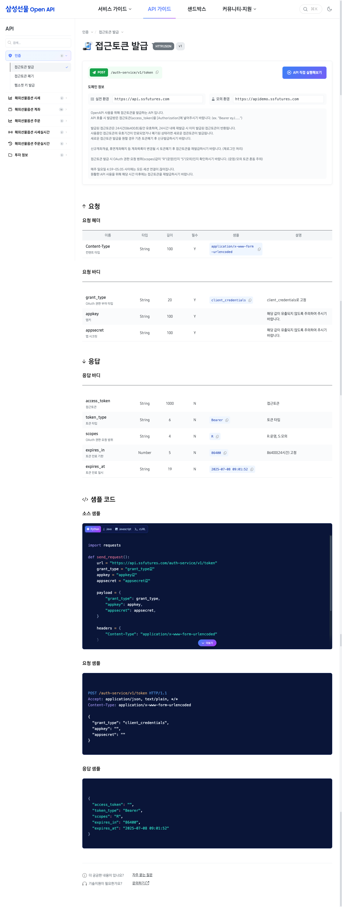

프로젝트 개요
- 클라이언트
- 네오프레임
- 프로젝트 유형
- 신규 구축 (Open API 포털 + 어드민 시스템)
- 진행 기간
- 2025년 4월 ~ 8월
- 기술 스택
- Vue3, Nuxt, Pinia, Vite, RESTful API, TailwindCSS, Figma
오드오드의 역할
- 기획 보완: API 문서 포털의 사용자 흐름 재정비, 개발자 경험(DX) 중심 정보 구조 최적화
- UI/UX 디자인: API 문서 레이아웃, 테스트 콘솔 UI, 디자인 시스템 구축
- 프론트엔드 개발: Open API 개발자센터 포털 전체 구현, API 문서 자동화, 테스트 콘솔 개발
주요 수행 내용
기획 및 UX 설계
- API 문서 탐색 흐름 최적화: 카테고리 → API 목록 → 상세 문서 → 테스트
- 개발자 경험(DX) 중심 설계: 빠른 검색, 코드 복사, 즐겨찾기 기능
- 다크모드, 키보드 탐색, 접근성 설계 포함
UI 디자인
- 3단 레이아웃 구조: 좌측 메뉴 + 본문 + 우측 TOC
- API 테스트 콘솔 UI: Request/Response 패널, 파라미터 입력 폼
- 코드 하이라이팅 및 복사 버튼 UX 설계
프론트엔드 개발
- Open API 개발자센터 포털 전체 프론트엔드 구현 (Public/Admin)
- API 문서 자동화 시스템: Swagger/OpenAPI 스펙 기반 동적 문서 렌더링
- 인터랙티브 API 테스트 콘솔: 실시간 요청/응답 시뮬레이션, 파라미터 자동완성
- 코드 스니펫 생성기: Python, Java, JavaScript 등 다국어 샘플 코드 제공
- API 버전 관리 및 그룹별 필터링, 검색 시스템 구현
- 좌측 네비게이션 + 우측 TOC 연동 스크롤 동기화
- 다크모드, 반응형 레이아웃, 키보드 접근성 지원

